Fire Hydrant attachments
[Sources for this page]Sources for this page
- Water Supplies Department (HKSAR Government), revised on Y2024-M03-D01 | 水管改善工程與緊急維修 (I am specifically referring to the Chinese version of the page) | https://www.wsd.gov.hk/tc/water-matters/water-distribution/07/
Hydraulic Test equipment
By my observation, the most common hydraulic test cap is the green nut-operated type, but there are a few more types of cap.
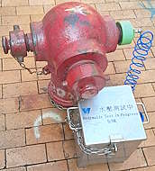 |
| red Round Head 30135 with green nut-operated hydraulic test cap on one of its side nozzles |
| Shau Kei Wan Main Street East opposite Shau Kei Wan Market Building |
| Photo taken in Y2026-M02 |
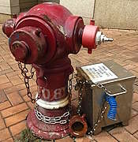 |
| red Round Head 31082 with red hydraulic test cap with handles on one of its side nozzles; the cable from the cap to the hydraulic test box was disconnected for some reason |
| Chai Wan Road near A Kung Ngam Road bus stop |
| Photo taken in Y2026-M08 |
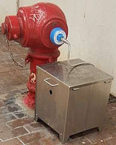 |
| red Round Head 1421 with Vernon Morris Utility Solutions hydraulic test cap on one of its side nozzles |
| Sing Woo Road opposite of Shing Ping Street |
| Photo taken in Y2026-M04 |
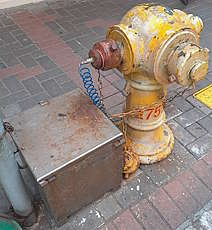 |
| yellow Round Head 27530 with rusty hydraulic test cap with handles on one of its side nozzles |
| Portland Street near Waterloo Road |
| Photo taken in Y2026-M04 |
Connected to portable meters
I am not sure what kind of tests are being conductede, but presumably these are equipment are used for tests similar to hydraulic tests.
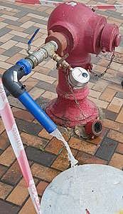 |
| red Round Head 28528 (previously 1449) with portable meter (?) and tap connected to one of its side nozzles |
| Waterloo Road opposite of Essex Crescent |
| Photo taken in Y2026-M04 |
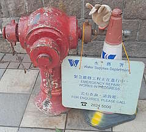 |
| red Round Head 3258 with portable meter (?) and water tap on one of its side nozzles, but the portable meter (?) was covered and the emergency repair in progress sign was hanged on the attachment |
| Battery Street at Yau Ma Tei Orthodontic Clinic |
| Photo taken in Y2026-M04 |
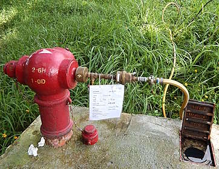 |
| red Round Head 8840 with portable meter connected to one of its side nozzles |
| cycling track next to So Kwun Po Road near Kockey Club Road |
| Photo taken in Y2026-M07 |
Taps for temporary water supply
When fresh water supply is disrupted in buildings, you might see these taps attached to one of the side nozzles of fresh water hydrants on the street, allowing the affected residents to get fresh water with containers like buckets.
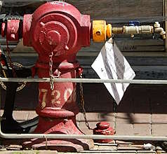 |
| red Round Head 27206 with temporary fresh water supply tap on one of its side nozzles |
| Tung Kun Street Reclamation Street |
| Photo taken in Y2026-M06 |
Hoses connecting hydrants to small work sites
Occasionally, you might see hydrants being connected to work sites by hoses.
 |
| red Round Head 5895 (later 23251) with hose connected to one of its side nozzles, the hose was connected to a small work site of footbridge lift N546B approximately 150 metres away |
| Wing Shun Street opposite of Wing Tak Street |
| Photo taken in Y2022-M01 |
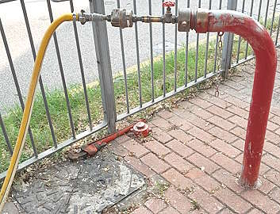 |
| red Swan Neck 13617 with hose connected to one of its side nozzles, presumably for the footbridge lift construction site next to the Swan Neck |
| Boundary Street @ Embankment Road |
| Photo taken in Y2026-M04 |
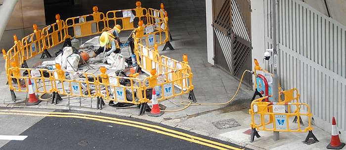 |
| A red unnumbered Swan Neck with hose connected to its only outlet nozzle, presumably for the water works site next to the Swan Neck |
| Garden Road @ Queen's Road Central |
| Photo taken in Y2026-M07 |
Pipes for big work sites
On Pak Shing Kok Road, Round head 6640 had a big pipe connected to its front nozzle. From Google Maps street view, we can see that the pipe goes into a big work site nearby, known as the "Site Formation and Infrastructure Works at Tseung Kwan O - Yau Yue Wan and Pak Shing Kok". This started happening at some point between Y2022-M02 and Y2023-M06, and is still ongoing as of Y2026-M05.
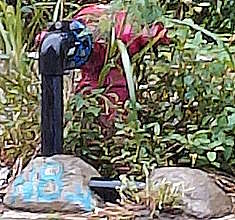 |
| red Round Head 6640 with a pipe connected to its front nozzle |
| Pak Shing Kok Road, approximate 100 metres south of the Fire and Ambulance Services Academy Citybus stop |
| Photo taken in Y2026-M05 |